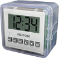
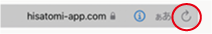
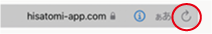

を押しながら
にする
 を離す
「接続処理」をする
を離す
「接続処理」をする
を離す
「接続処理」をする

注意点
１，プログラミングを行う前に「接続処理」を確認して下さい（接続処理の詳細はこちら）
２，データ転送が出来なくなった場合はアプリを開きなおして下さい
iPadがスリープになったり、保存、読み込みを行った場合データ転送が出来なくなります。
その場合はをクリックしアプリを再読み込みした後、「接続処理」を押し、LEDが紫点灯することを確認し「転送・実行」を行って下さい
２，データ転送が出来なくなった場合はアプリを開きなおして下さい
iPadがスリープになったり、保存、読み込みを行った場合データ転送が出来なくなります。
その場合はをクリックしアプリを再読み込みした後、「接続処理」を押し、LEDが紫点灯することを確認し「転送・実行」を行って下さい